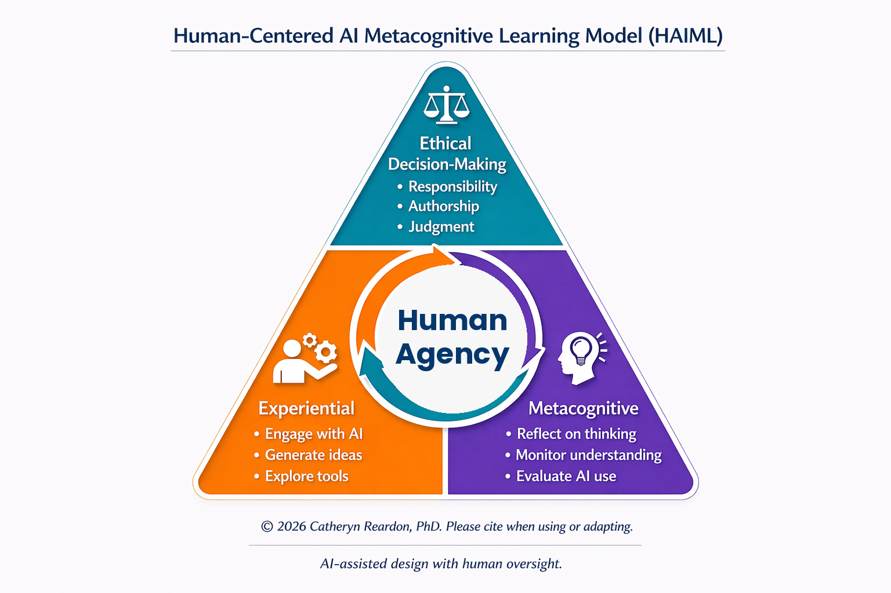

HAIML
A framework for learning with AI while preserving human agency, reflection, and ethical judgment

The Human-Centered AI Metacognitive Learning Model (HAIML), developed by Catheryn Reardon, PhD, is a framework designed to guide how students learn with AI while maintaining human agency, critical thinking, and ethical responsibility. Rather than positioning AI as a replacement for learning, HAIML centers the human learner and asks how AI can support reflection, judgment, and intentional engagement.
HAIML is grounded in the idea that students should not simply use AI to complete tasks. They should also think critically about how AI influences their choices, their confidence, their revision process, and their understanding. In this way, learning with AI becomes both experiential and reflective.
Suggested citation: Reardon, C. (2026). Introducing HAIML: A Human-Centered AI Metacognitive Learning Model.
HAIML is grounded in established research on self-efficacy, self-regulated learning, and metacognition. Drawing on Bandura’s theory of self-efficacy, the model recognizes that students’ confidence in their ability to learn and make decisions plays a critical role in motivation, persistence, and engagement (Bandura, 1997, 2001). HAIML supports this by structuring AI use in ways that allow students to experience guided success while maintaining control over their learning.
The model is also informed by theories of self-regulated learning, particularly the work of Zimmerman, which emphasizes that learners actively plan, monitor, and evaluate their own learning processes (Zimmerman, 2002, 2008). HAIML extends this idea into AI-mediated environments by helping students make intentional decisions about when and how to use AI, rather than relying on it passively.
Metacognitive theory further supports HAIML by emphasizing awareness of one’s own thinking (Schraw & Dennison, 1994; Bjork et al., 2013). The model integrates structured reflection to help students examine how AI shapes their reasoning, where it supports understanding, and where human judgment remains essential. Together, these theoretical foundations position HAIML as a framework that not only supports learning with AI, but also strengthens confidence, reflection, and responsible decision-making.
As AI becomes increasingly embedded in education, students need more than access to tools. They need frameworks that help them understand when AI is useful, when it may limit their thinking, and how to remain active decision-makers in the learning process. HAIML provides that structure by connecting use, reflection, and ethics.
This model is especially important in writing-intensive, reasoning-based, and decision-making contexts where students may be tempted to outsource thinking rather than deepen it. HAIML helps shift AI use away from convenience alone and toward metacognitive and ethical growth.
In the experiential layer, students actively engage with AI tools in authentic learning tasks. This may include brainstorming, organizing ideas, generating feedback, analyzing responses, or comparing AI-generated material with their own thinking. The goal is meaningful interaction with AI as part of the learning process.
In the metacognitive layer, students reflect on how AI influences their thinking, confidence, judgment, and revision process. They consider questions such as: What did AI help me see? What did it make easier? What did it make me rely on too quickly?
In the ethical decision-making layer, students evaluate AI use through the lens of responsibility, transparency, authorship, fairness, and human accountability. Students learn to determine whether their use of AI supports learning and integrity.
HAIML works in close alignment with my four-level AI use guidelines. Together, these models help students understand both what kinds of AI use are allowed and how to think about that use more deeply.
This combination supports a human-centered approach in which students remain active participants in their own learning and develop intentional decision-making in AI-rich environments.
HAIML can be applied across a wide range of educational settings, including online courses, writing-intensive assignments, discussion activities, reflection tasks, and AI-supported feedback environments.
In my own work, HAIML informs course design, structured AI assignments, reflective prompts, AI-supported grading with human oversight, and faculty conversations about responsible AI integration.
HAIML continues to evolve as I study how students experience AI-supported learning and how educators can preserve human judgment in technology-rich environments.
Bandura, A. (1997). Self-efficacy: The exercise of control. W.H. Freeman.
Bandura, A. (2001). Social cognitive theory: An agentic perspective. Annual Review of Psychology, 52(1), 1–26.
Bjork, R. A., Dunlosky, J., & Kornell, N. (2013). Self-regulated learning: Beliefs, techniques, and illusions. Annual Review of Psychology, 64, 417–444.
Schraw, G., & Dennison, R. S. (1994). Assessing metacognitive awareness. Contemporary Educational Psychology, 19(4), 460–475.
Zimmerman, B. J. (2002). Becoming a self-regulated learner. Theory Into Practice, 41(2), 64–70.
Zimmerman, B. J. (2008). Investigating self-regulation and motivation. American Educational Research Journal, 45(1), 166–183.